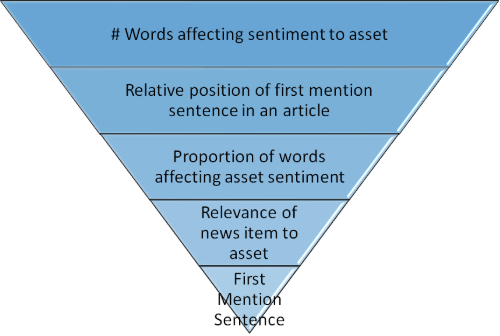
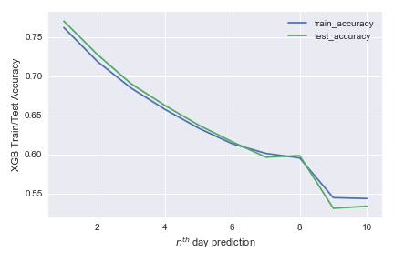

Would you like to make more money? Who wouldn't? Investing in the stock market is a great way to do just that! But beware: To be successful, you'll need to invest in the right stock at the right time. Our interactive application will help you maximize your profit by showing you how to get the most out of the news you read every day.
To dive right in and start using the app, click the image below. To learn more about how to use the app or the features that we looked at, keep reading.

How to Use Our App
- Pick a Stock: Is there a stock you're particularly interested in? Great! Click on it in the list on the right side of the application to learn more about how it's fared over time.
- Explore the Stock: Our app lets you easily see stock price movement trend and the tooltip tells the Expected and Predicted stock price movement. The Predicted arrow shows the direction our model expected the stock to move. The Expected arrow shows what actually occurred.
- Track the Stock: The ticker on the left lets the user to track the actual price and the volume of the selected stock on a particular date. The date changes as the user moves the cursor over the line plot.
- Select Time Range: The legend at the top provides the user to choose the time interval for which he is interested to see the stock price pattern.
- Easy Time Window: The blue box allows the user to select the custom time window and also to scroll over it.
- Explore the News: Click on a date of interest in the top graph to see a list of news items from that day related to your chosen stock. The app shows the sentiment value with 1 being positive, -1 being negative, and 0 being neutral, urgency of the news item whether it is an article (3) or an alert (1) and the color of the news shows the positive (Green) and negative (Red) impact on stock price movement.
Analysis in a Nutshell
We observed that the number of words directly depicting the sentiment of the news towards the stock is the most relevant feature towards the stock movements. We also observed that people respond more to articles than to headlines. The earlier or later mention of stocks in an article/headline also impact their movement. The relevance of the news towards the stock asset also provides an idea of the direction of the stock movement.
What may be more surprising are that people tend to respond to negative sentiments more than to positive sentiments.
|  |  |
Since news has a longer term impact on stock price movements, we focused on predicting the same from day 1 through day 10 from the day of observation and measure the accuracy. As depicted, using news sentiments to predict the movements for immediately next day give us an accuracy of 75%, comparable to historical research accuracy of 78% obtained using market data. As expected, the prediction accuracy decreased from day 1 through day 10 as shown in the plot above. Thus, news sentiments provide an extra leg in the predicability of stock price movements, if combined with market data.
Our Team
Modeling
 Ravi Prakash Singh
Georgia Tech, MS in Analytics, 2019
Ravi Prakash Singh
Georgia Tech, MS in Analytics, 2019
 Aditya Aggarwal
Georgia Tech, MS in Computer Science, 2020
Aditya Aggarwal
Georgia Tech, MS in Computer Science, 2020
 Manish Mehta
Georgia Tech, MS in Analytics, 2019
Manish Mehta
Georgia Tech, MS in Analytics, 2019
Visualization
 Sudhanshu Raj Singh
Georgia Tech, MS in Analytics, 2019
Sudhanshu Raj Singh
Georgia Tech, MS in Analytics, 2019
 Anna Riehle
Georgia Tech, MS in Analytics/MBA, 2020
Anna Riehle
Georgia Tech, MS in Analytics/MBA, 2020
 Emily Huskins
Georgia Tech, MS in Analytics, 2019
Emily Huskins
Georgia Tech, MS in Analytics, 2019